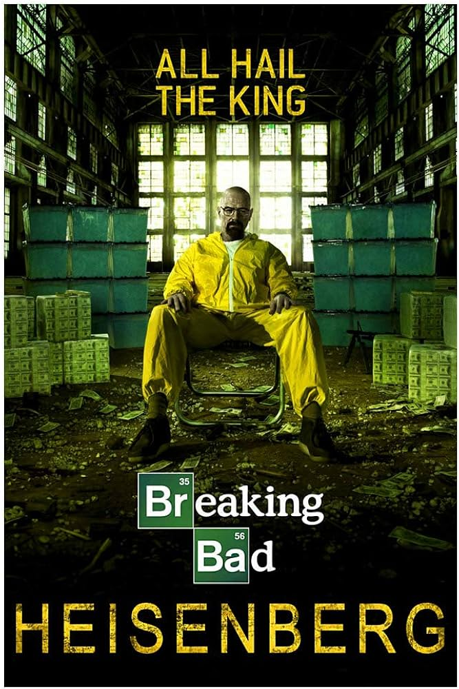

Характеристики
- Годы выхода: 2008–2013
- Сезонов: 5
- Жанры: Криминал, Драма, Триллер
- Страна: США
- Создатели: Винс Гиллиган
Описание
Химик-преподаватель начинает варить метамфетамин, чтобы обеспечить семью, и втягивается в криминальный мир.

Химик-преподаватель начинает варить метамфетамин, чтобы обеспечить семью, и втягивается в криминальный мир.